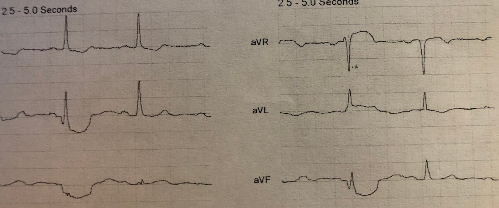
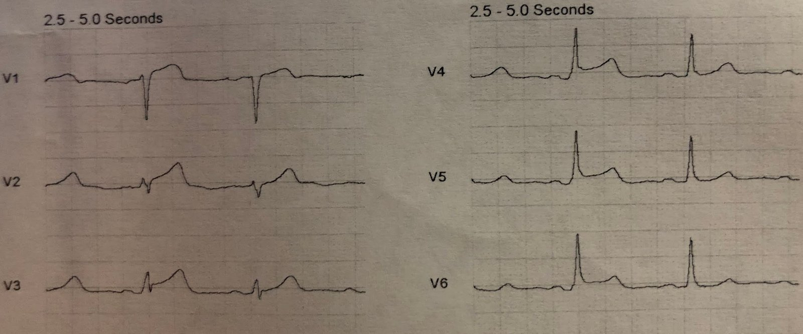
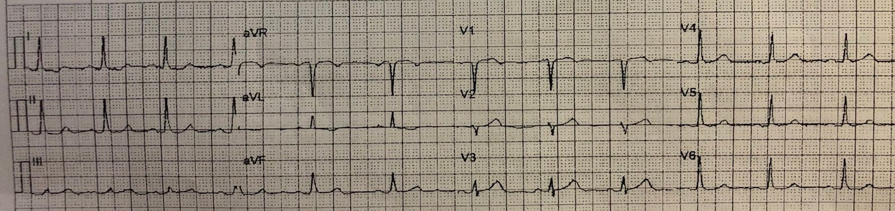
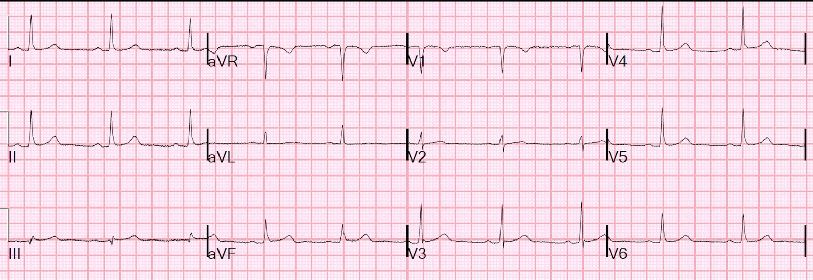
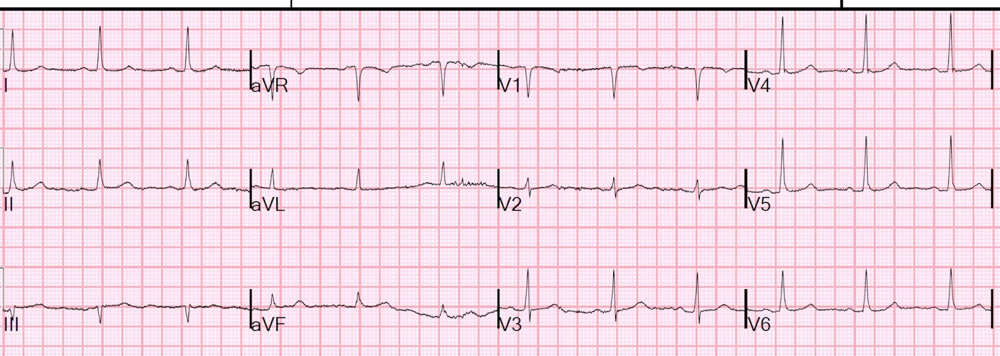
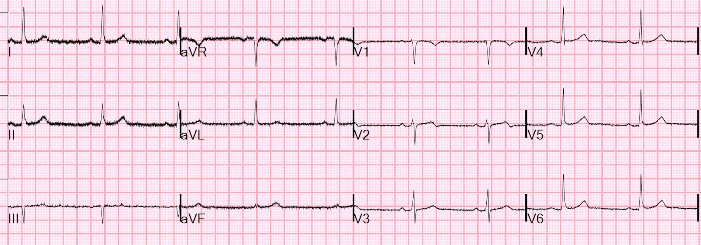
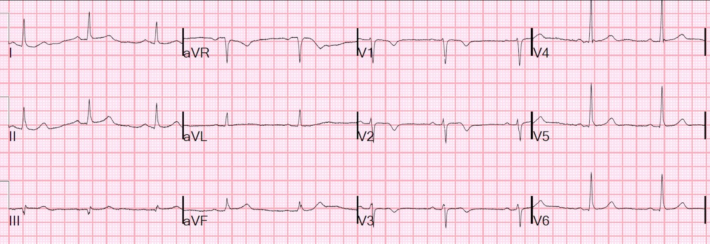
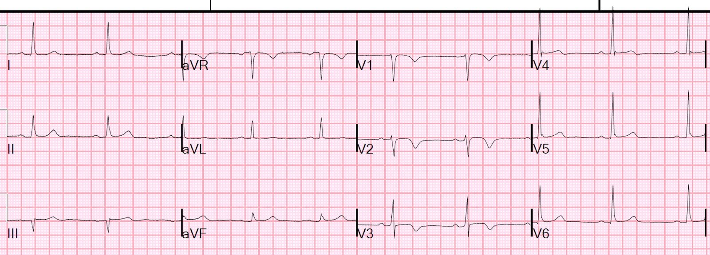
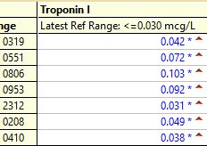
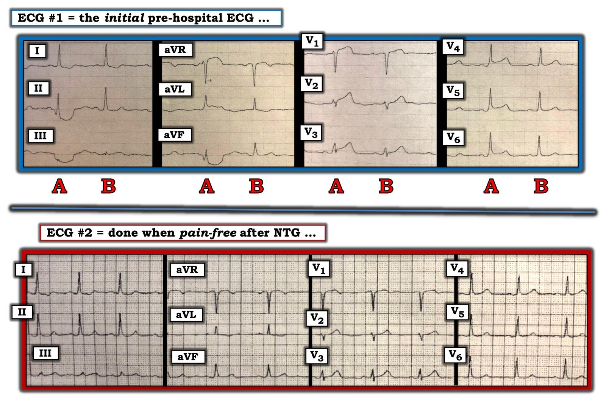

22/09/2019 — Một người đàn ông 40 mấy tuổi khỏe mạnh bị cảm giác bóp nghẹt ngực thoáng qua
Bản dịch tiếng Việt của bài "A 40-something healthy male with transient chest squeezing" – Dr. Smith’s ECG Blog. Giữ nguyên toàn bộ 12 hình ảnh của bản gốc.
Một người đàn ông 40 mấy tuổi có tiền sử tăng huyết áp (HTN) đã điều trị, bị cảm giác “bóp nghẹt” ở ngực kèm khó thở (SOB) và vã mồ hôi, 10 giờ trước khi đến viện. Cơn kéo dài 5 phút rồi hết. Có yếu tố liên quan đến gắng sức. Sau đó, 1 giờ trước khi đến, cơn tái phát, lại kéo dài 5 phút. Cơn thứ 3 và cũng là cơn cuối nặng hơn, lan ra cả hai tay, mức độ 10/10.
Người nhà gọi 911 và điện tâm đồ trước viện này được ghi tại mốc thời gian ban đầu (time zero):
Các chuyển đạo chi:


Các chuyển đạo trước tim:


Điện tâm đồ này có giá trị chẩn đoán OMI do LAD. Có ST chênh lên (STE) không đạt tiêu chuẩn STEMI ở V1-V6. Sóng T ở V1-V3 có kích thước bình thường, nhưng các sóng T này lại rất lớn so với biên độ QRS. Đây là các sóng T tối cấp. Hơn nữa, bất cứ khi nào có ST chênh lên, dù ở mức nào, đều phải giải thích được: đó là ST chênh lên bình thường? Hay do thiếu máu cục bộ?
Một dấu hiệu loại bỏ khả năng ST chênh lên bình thường là “biến dạng phần cuối QRS (Terminal QRS distortion).” Đó là việc không có cả sóng S lẫn sóng J ở V2 HOẶC V3. Ở đây, V3 không có sóng S và cũng không có sóng J. Dấu hiệu này có giá trị chẩn đoán ST chênh lên do thiếu máu cục bộ và OMI do LAD.
Xem các bài trước đây về biến dạng phần cuối QRS:
Paper published: Terminal QRS distortion not found in any ECG of Early Repolarization (Bài báo đã công bố: không thấy biến dạng phần cuối QRS ở bất kỳ điện tâm đồ tái cực sớm nào)
Best Explanation of Terminal QRS Distortion in Diagnosis of Electrocardiographically Subtle LAD Occlusion (Giải thích hay nhất về biến dạng phần cuối QRS trong chẩn đoán tắc LAD kín đáo trên điện tâm đồ)
An intoxicated, agitated, 20-something with chest pain (Một người hai mươi mấy tuổi say xỉn, kích động, bị đau ngực)
Incredible case of evolution of terminal QRS distortion, then resolution after thrombolytics (Ca bệnh đáng kinh ngạc về diễn tiến của biến dạng phần cuối QRS, rồi biến mất sau tiêu sợi huyết)
4 Cases Discussing Terminal QRS Distortion in Diagnosis of Anterior MI (Bốn ca bàn luận về biến dạng phần cuối QRS trong chẩn đoán nhồi máu cơ tim thành trước)
Ca bệnh tiếp diễn:
Bệnh nhân được dùng NTG ngậm dưới lưỡi và cơn đau hết (đây là do NTG? Hay chỉ là trùng hợp? — không rõ).
Điện tâm đồ lúc hết đau này đã được ghi:


Nếu trước đây bạn chưa tin, thì điện tâm đồ thay đổi động này chứng minh điều đó.
Bệnh nhân được ghi nhiều điện tâm đồ trước viện sau đó, tất cả đều giống hệt bản vừa rồi và đều trong lúc không đau.
Bệnh nhân được dùng aspirin.
Khi đến viện, điện tâm đồ này được ghi:


Khoa tim mạch được mời hội chẩn và họ không muốn đưa bệnh nhân vào phòng thông tim cấp cứu.
Bệnh nhân được dùng heparin.
Siêu âm tim tại giường (POCUS) không thấy rối loạn vận động thành (WMA).
Troponin lần đầu là 0,042 ng/mL (tăng trên bách phân vị thứ 99 của giới hạn trên tham chiếu (URL) là 0,030 ng/mL).
1,5 giờ sau, điện tâm đồ này được ghi:


Thêm vài điện tâm đồ nữa được ghi, không có thay đổi.
Điện tâm đồ này được ghi lúc 8 giờ:


Đây là hội chứng Wellens, nhưng trong Wellens, không phải lúc nào bạn cũng có được điện tâm đồ ghi trong lúc đau như ở ca này. Điều này cho thấy một bệnh nhân Wellens đã có OMI vào thời điểm đau và sóng T đảo ngược của Wellens là do tái tưới máu tự phát của một OMI.
Điện tâm đồ này được ghi vào sáng hôm sau:


Xem bài này:
Classic Evolution of Wellens’ T-waves over 26 hours (Diễn tiến kinh điển của sóng T Wellens trong hai mươi sáu giờ)
Và thêm một chút diễn tiến nữa ở đây.


Diễn biến troponin


Bệnh nhân được chụp mạch vành và có tổn thương huyết khối hẹp 90% ở LAD đoạn gần, đã được đặt stent.
Đây là kết quả siêu âm tim chính thức của bệnh nhân:
Kích thước thất trái bình thường, độ dày thành thất trái tăng nhẹ kiểu đồng tâm và chức năng tâm thu bình thường.
Phân suất tống máu thất trái ước tính là 61 %.
Không phát hiện rối loạn vận động thành (WMA) thất trái.
Thiếu máu cục bộ ở bệnh nhân này ngắn đến mức không gây choáng cơ tim (myocardial stunning). Thường thì rối loạn vận động thành vẫn tồn tại sau khi thiếu máu cục bộ đã hết (vì vậy, điện tâm đồ là chỉ dấu tốt hơn siêu âm tim đối với thiếu máu cục bộ tức thời), nhưng ở đây ta thấy siêu âm tim bình thường không loại trừ được STEMI/OMI thoáng qua.

===================================
Bình luận của KEN GRAUER, MD (22/9/2019):
===================================
Ca bệnh này của Dr. Smith có những khái niệm quan trọng cần nhấn mạnh. Tôi tập trung vào 2 điện tâm đồ đầu tiên, cả hai đều được ghi trước khi đến bệnh viện.
- Cho rõ ràng — tôi đã ghép 2 phần của điện tâm đồ thứ 1 lại với nhau, và đã gắn nhãn lại các bản ghi (Hình 1).


2 điện tâm đồ trong Hình 1 được ghi trước khi đến khoa cấp cứu (ED). Bệnh nhân là một người đàn ông 40 mấy tuổi bị đau ngực mới xuất hiện.
- Điện tâm đồ #1 cho thấy nhịp xoang đều với phức bộ QRS hẹp. QTc bình thường. Không có lớn các buồng tim. Tăng tiến sóng R bình thường. Các dấu hiệu đáng chú ý nhất (như Dr. Smith đã nêu ở trên) — là các thay đổi ST-T.
CÂU HỎI: TẠI SAO lại có khác biệt lớn đến vậy về hình dạng phức bộ QRS và sóng ST-T xảy ra cách một nhát ở Điện tâm đồ #1? Nghĩa là, TẠI SAO phức bộ QRST thứ 1 trong mỗi nhóm 3 chuyển đạo (các nhát được gắn nhãn “A”…) — trông khác hẳn so với phức bộ QRST thứ 2 (các nhát được gắn nhãn “B” ở điện tâm đồ #1)?
TRẢ LỜI CỦA TÔI: Tôi tin rằng cứ cách một nhát ở điện tâm đồ #1 lại bị biến đổi bởi Nhiễu! Dù rõ ràng là khó nhận ra điều này hơn ở các chuyển đạo ngực — nhưng từ các chuyển đạo chi, lẽ ra phải thấy rõ là các nhát được gắn nhãn “A” đúng là bị ảnh hưởng nhiều bởi Nhiễu.
- Dù nhát A ở chuyển đạo I không bị ảnh hưởng — nhưng hình ảnh chênh xuống kỳ dị, dạng lõm của toàn bộ đoạn ST ở nhát A trong chuyển đạo II và III của Điện tâm đồ #1 rõ ràng là do nhiễu. Điều này cho ta biết sóng Q thấy ở chuyển đạo II của nhát A (nhưng không có ở nhát B) là không có thật.
- Tương tự — lẽ ra phải thấy rõ là sóng Q và hình ảnh chênh xuống kỳ dị, dạng lõm của toàn bộ đoạn ST ở nhát được gắn nhãn “A” trong chuyển đạo aVF phần lớn bị nhiễu làm biến đổi. Phần ST chênh lên dạng lõm tăng thêm của “A” ở chuyển đạo aVR cũng phần lớn bị nhiễu làm biến đổi. Kém rõ hơn một chút, nhưng vẫn khá hiển nhiên, là ST chênh lên do nhiễu của “A” ở chuyển đạo aVL.
- Ở CÁC CHUYỂN ĐẠO NGỰC — NẾU bạn nhìn kỹ — sóng T của các nhát được gắn nhãn “A” ở chuyển đạo V1, V2 và V3 đều cao hơn (nổi bật hơn) sóng T của các nhát được gắn nhãn “B” ở các chuyển đạo này. Lý do tôi tin các nhát A ở V1, V2 và V3 bị nhiễu làm biến đổi là: i) hình dạng đoạn ST của các nhát được gắn nhãn A ở chuyển đạo V1 và V2 trông không tự nhiên (tức là, với tôi, nó trông như bị nhiễu làm méo); và, ii) nhịp điệu cách một nhát của nhiễu NHẤT QUÁN trong suốt điện tâm đồ #1 ở từng nhát được gắn nhãn “A” — trong khi các nhát B trong suốt điện tâm đồ #1 không có dáng vẻ của nhiễu.
- Còn kín đáo hơn nữa là sự biến đổi do nhiễu ở các nhát được gắn nhãn “A” trong chuyển đạo V4, V5 và V6. Lưu ý rằng có ST chênh lên nhẹ-nhưng-có-thật và sóng T nổi bật hơn ở mỗi chuyển đạo ngực bên này đối với các nhát được gắn nhãn “A” so với các nhát được gắn nhãn “B”.
ĐIỂM THEN CHỐT (PEARL) #1: Điều quan trọng là phải nghi ngờ nhiễu bất cứ khi nào bạn thấy những biến đổi bất thường (không lường trước) về hình thái QRST — vì điều này có thể ảnh hưởng đáng kể đến việc diễn giải của bạn!
- NẾU, như tôi nghi ngờ — cứ cách một nhát ở điện tâm đồ #1 thực sự bị nhiễu làm biến đổi — thì cả ST chênh lên thấy ở từng chuyển đạo ngực của các nhát được gắn nhãn “A” — lẫn biến dạng phần cuối QRS của nhát A ở chuyển đạo V3 có thể không có thật (tức là, Lưu ý rằng sóng S có đi xuống dưới đường nền ở nhát “B” trong chuyển đạo V3 — đúng như bình thường khi có sóng S ở chuyển đạo này).
- Tôi thừa nhận là mình không chắc vì sao hình thái QRST bị biến đổi lại xảy ra theo nhịp điệu cách một nhát ở 8 nhát mà ta thấy trong điện tâm đồ #1 (có thể do run từng lúc ở bàn chân trái — xét theo việc nhiễu nhiều nhất ở chuyển đạo II, III và aVF). Dù vậy — NẾU bạn nhận ra sự không nhất quán này về hình thái QRST đang xảy ra cách một nhát — thì có thể DỄ DÀNG xác định liệu tôi nghi ngờ nhiễu là đúng hay không bằng cách: i) Ghi lại điện tâm đồ ngay lập tức, để xem hiện tượng cách một nhát này có biến mất không! — và, ii) Nhìn vào bệnh nhân trong khi ghi lại điện tâm đồ (đôi khi bạn sẽ thấy cử động của bệnh nhân hoặc những sự việc khác tại giường làm lộ rõ ngay nguyên nhân gây nhiễu).
ĐIỂM THEN CHỐT (PEARL) #2: Dù tôi đúng hay không khi cho rằng các nhát được gắn nhãn “A” ở điện tâm đồ #1 bị nhiễu làm biến đổi — thì các sóng T được gắn nhãn “B” ở chuyển đạo V2 và V3 vẫn cao không tương xứng và đầy đặn-ở-đỉnh-hơn-mức-lẽ-ra-phải-có khi xét đến biên độ rất nhỏ của phức bộ QRS ở 2 chuyển đạo này. Ngoài ra, sóng T dương của nhát “B” ở chuyển đạo V1 nổi bật hơn mức lẽ ra phải có — nhất là vì biên độ sóng T của B ở V1 lớn hơn biên độ sóng T của B ở chuyển đạo V6! (Bình thường biên độ sóng T ở V6 phải lớn hơn ở chuyển đạo V1.). Ở một bệnh nhân bị đau ngực mới xuất hiện — những thay đổi sóng T này ở các nhát được gắn nhãn “B” trong chuyển đạo V1, V2 và V3 chính là sóng T tối cấp!
- Lưu ý ở điện tâm đồ #2 được ghi một lúc sau (sau khi NTG ngậm dưới lưỡi làm hết đau ngực) — không còn sự thay đổi hình thái QRST xảy ra cách một nhát. Điều này ủng hộ nghi ngờ của tôi rằng các nhát được gắn nhãn “A” ở điện tâm đồ #1 đã bị nhiễu làm biến đổi.
- So sánh hình thái QRST thấy ở điện tâm đồ #2 — với hình thái QRST ở từng chuyển đạo trong 12 chuyển đạo của các nhát được gắn nhãn “B” ở điện tâm đồ #1 (mà tôi tin là các nhát không bị nhiễu) — cho thấy hình dạng sóng T tối cấp ở các chuyển đạo trước mà ta thấy ở các nhát “B” trong điện tâm đồ #1 đã cải thiện kín đáo-nhưng-có thật. Dù vậy — mức thay đổi giữa 2 điện tâm đồ này rõ ràng là ít hơn so với những gì người ta có thể nghĩ nếu chỉ đơn giản so sánh điện tâm đồ #2 với các nhát được gắn nhãn “A” ở điện tâm đồ #1.
Tôi ước gì điện tâm đồ #1 đã được ghi lại ngay lập tức — trong khi nhìn vào bệnh nhân để xem liệu có thể xác định được nguyên nhân gây ra nhiễu mà tôi nghi ngờ hay không.
Chúng tôi xin CẢM ƠN Dr. Smith một lần nữa vì ca bệnh bổ ích này!